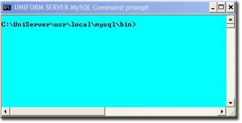

MySQL Console
The MySQL server can be administered from a command window. Uniform Server provides a short cut named MySQL console whichs opens a command window with the correct path to the MySQL utilities folder already set. Apart from cosmetics, it is identical to a standard command window.
This page focuses on using MySQL console. It is not intended as a definitive guide but just an introduction to show you how to access and use MySQL client.
Command window
Using a command window to administer the MySQL server is not specific to The Uniform Server. Running a standard command window is the same for any Windows MySQL installation. The Uniform Server’s MySQL console sets the paths and cosmetics transparently. With a command window open you can access the MySQL server utilities mysql client and mysqladmin. MySQL client allows you to run SQL commands, for example to create or delete databases. The following covers opening a standard command window and then The Uniform Server's preferred alternative MySQL console.
How to run a standard command window
To open a command window, run the command cmd from the start menu. Running a MySQL utility program requires navigating to its binary folder.
Note: The path where you installed The Uniform Server may be different; substitute your path as appropriate.
The dialogue in the command window looks similar to that on the right. Note: To use the command window you must have the MySQL server running. |

|
MySQL console command window short cut
|
Running MySQL console from UniController has a number of advantages. The button is enabled only when the MySQL server is running. Server location tracking allows the correct folder to be automatically selected when the console window is open. Opening a console window requires only a single button click.
|
 |
Quick MySQL binary folder check
When running MySQL utilities, the working directory is changed to the MySQL folder: UniServer\usr\local\mysql\bin.
|
To check the working directory, type the dir command into either of the above windows. The result should be as on the right.
|
C:\UniServer\usr\local\mysql\bin>dir Directory of C:\UniServer\usr\local\mysql\bin 21/06/2011 19:55 4,001,792 libmysql.dll 21/06/2011 19:54 4,106,240 mysql.exe 21/06/2011 19:54 4,037,632 mysqladmin.exe 21/06/2011 19:54 8,153,600 mysqld1.exe 21/06/2011 19:54 4,094,976 mysqldump.exe C:\UniServer\usr\local\mysql\bin> |
Start MySQL Client
|
To start MySQL Client, type the following at the command window:
Note 1: Do not copy and paste! Type the line in as shown.
Note 2: The mysql> prompt indicates you are in MySQL monitor and it is ready to receive your commands. Note 3: Quit MySQL monitor by typing the command exit |
On successful connection, you will receive a message similar to this: C:\UniServer\usr\local\mysql\bin>mysql -h127.0.0.1 -uroot -proot Welcome to the MySQL monitor. Commands end with ; or \g. Your MySQL connection id is 2 Server version: 5.5.20 MySQL Community Server (GPL) Copyright (c) 2000, 2011, Oracle and/or its affiliates. All rights reserved. Oracle is a registered trademark of Oracle Corporation and/or its affiliates. Other names may be trademarks of their respective owners. Type 'help;' or '\h' for help. Type '\c' to clear the current input statement. mysql> exit Bye C:\UniServer\usr\local\mysql\bin> |
Note 4: You will have changed the MySQL root password. Remember to change root with your password in the above (for -proot).
Related topics
Set New MySQL root user password using MySQL Console
Restore MySQL root user password using command window
Create delete Database using command window
Create Restricted MySQL User using command window
Delete Restricted MySQL User using command window
Edit Restricted MySQL User using command window